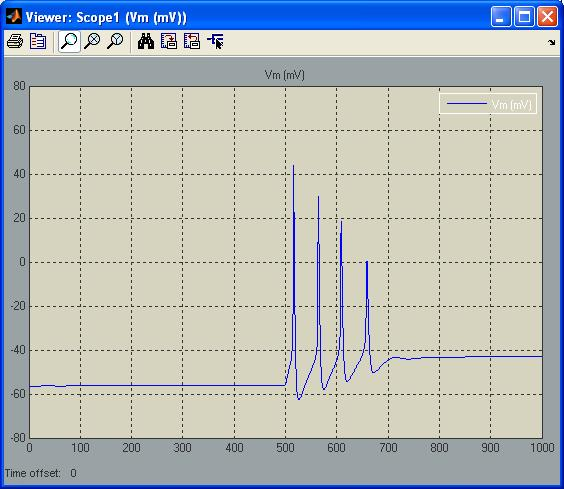

Press the below link to goto matlab central to download the model: Simulink implementation of nodose neuron action potential firing with parameters from the following studies: Schild,J.H., Clark,J.W., Hay,M., Mendelowitz,D., Andresen,M.C., and Kunze,D.L. (1994). A- and C-type rat nodose sensory neurons: model interpretations of dynamic discharge characteristics. J. Neurophysiol. 71, 2338-2358. Schild,J.H., and Kunze,D.L. (1997). Experimental and modeling study of Na+ current heterogeneity in rat nodose neurons and its impact on neuronal discharge. J. Neurophysiol. 78, 3198-3209. The screenshot image is the response to 0.04 nA current injection from the resting membrane potential at 37C: 